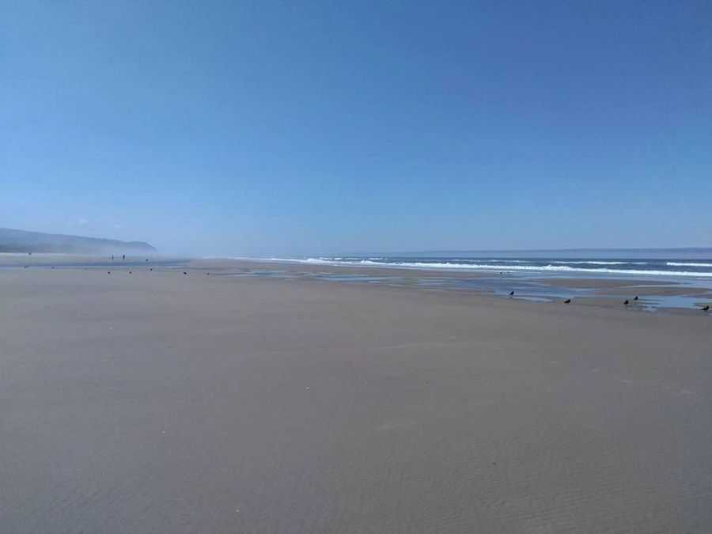

Within reach
Upriver from the bay, downriver from the woods.


DownriverToward the bay
- Crabbing a few miles down in Alsea Bay.
- Clam flats you can reach by car or by boat.
- Drift Creek by boat, for quieter water.
- Waldport and the beaches of the central coast.
UpriverToward the hills
- Crawfish in the upper river.
- Wild mushrooms within walking distance in season.
- Logging roads for miles of dirt-bike riding.
- Hunting in the surrounding Coast Range.
On the waterRight here
- Year-round fishing from the dock or your boat.
- Canoeing & kayaking on the slow tidal reach.
- Wildlife from the back deck, morning and evening.